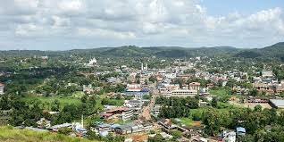
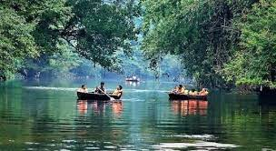

Pathanamthitta, is a municipality situated in the Southern Kerala, India, spread over an area of 23.50 km². It is the administrative capital of Pathanamthitta district. The town has a population of 37,538. Wikipedia
Weather: 26°C, Wind E at 3 km/h, 88% Humidity More on weather.com
Population: 37,538 (2011)
District: Pathanamthitta
Neighborhoods: Makkamkunnu, Vazhamuttom East, Vattakulangi, Ebenezer, Chenthiyathu Padi
Elevation: 31 m (102 ft)
Founded by: K. K. Nair
Telephone code: 0468
|  | |
 | |
| Mavarapara | Pathanamthitta Town | Konni Forest | Adavi Boating,Eco Tourism |